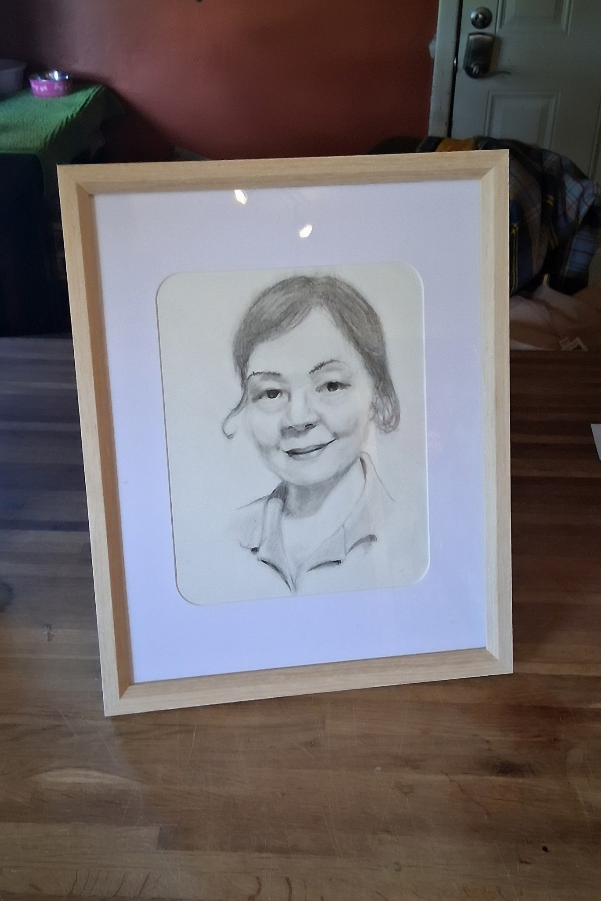
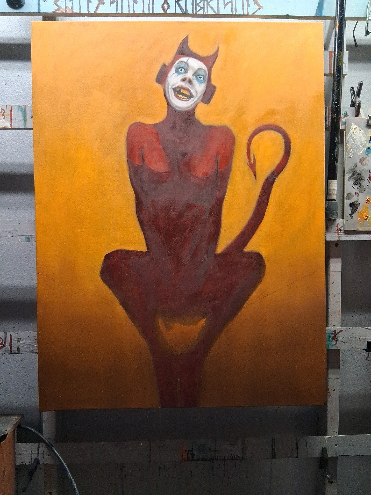
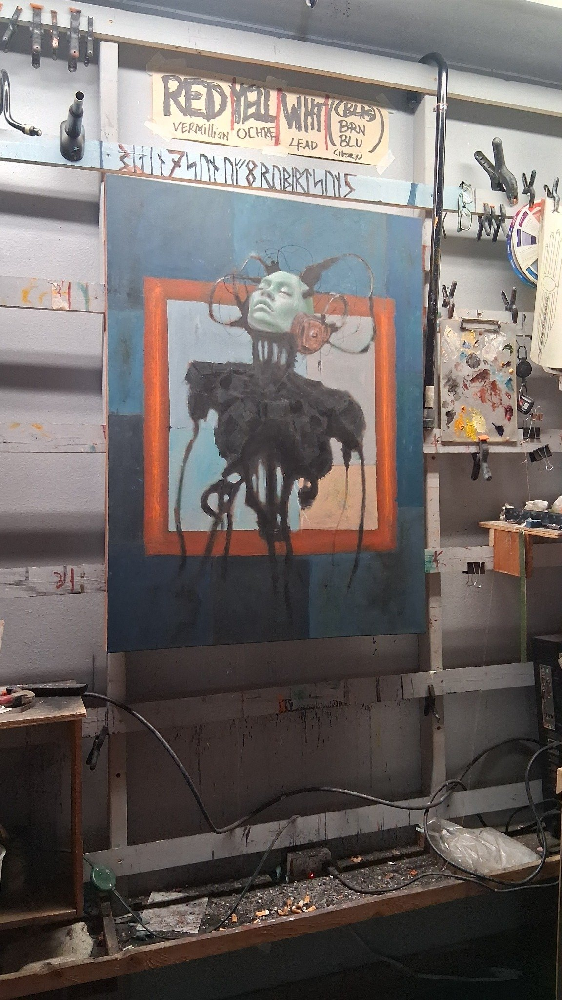
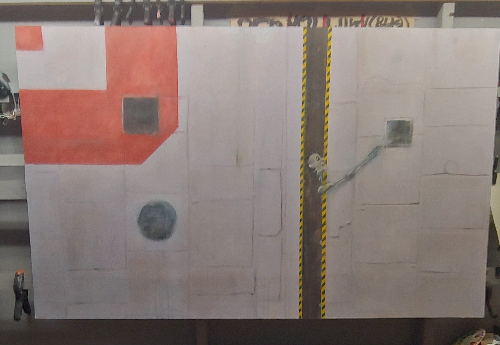
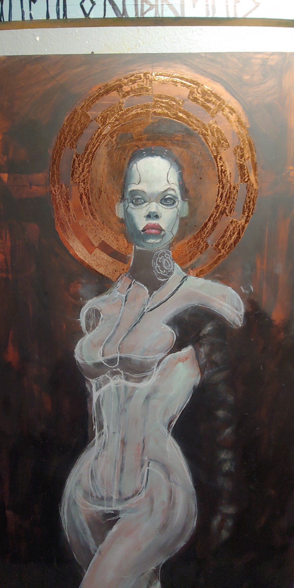

Late Night Code Breaking
I took a break. I always do. Indeterminate length. I paint when I feel it. When I don’t, I don’t. But even when I’m not painting, I try to move things forward.
My own gallery, by my own hands — every button, every glitch, every late-night curse at broken code — all of it. It’s art-adjacent. It’s me still pushing the myth forward, even if the brush isn’t wet.
The only physical piece I finished during that downtime was a charcoal — a retirement gift for someone at the day job. That liminal world where “real life” lives. I think it came out alright. Soft, respectful. More human than I felt while making it.
And I’ve been circling the studio again. The two oils I’ve been wrestling with — they’re both loud in my head again.
Smile, and the world laughs at you – WIP, Oil on Canvas
Limbo – WIP, Oil on Canvas
Yearn – WIP, Oil on Masonite
Glow – WIP, Oil on Masonite
Not rushing it. But I feel the pull again. Time to move.
Gallery Season
It’s that time again. Thinking about submitting to a few shows. There’s a black and white show at Art in the Couv I’ve got my eye on. Some of the charcoals might belong there. Might be time to let them out into the wild.